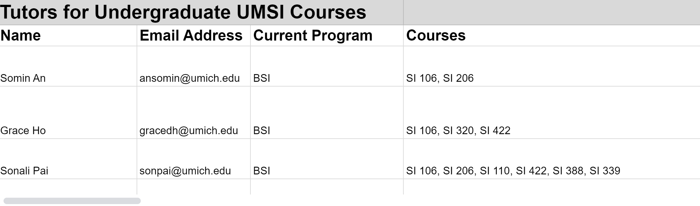

Peer-to-Peer Student Tutor Directory
Below is the link to UMSI students who are interested in serving as private tutors for SI courses and related content areas. UMSI maintains the directory (updated Fall/Winter semesters), but all interactions should be conducted peer-to-peer. In addition, UMSI does not guarantee specific results from, nor are we responsible for, tutoring services received via the peer-to-peer tutoring directory. If you have concerns regarding a tutoring experience, please email UMSI Academic Success at umsi.academicsuccess@umich.edu.
Additionally, students who have graduated from UMSI will be periodically removed from the list following degree conferral periods.
Directory Sheet
In response to student requests, the UMSI Academic Success team is hosting a comprehensive list of students interested in providing tutoring services to their classmates. Those included as a resource for this program are current students in good academic standing. All services provided will be considered at-will student to student exchanges and must be in compliance with all UMSI and U-M standards of academic integrity.